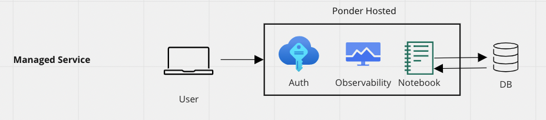
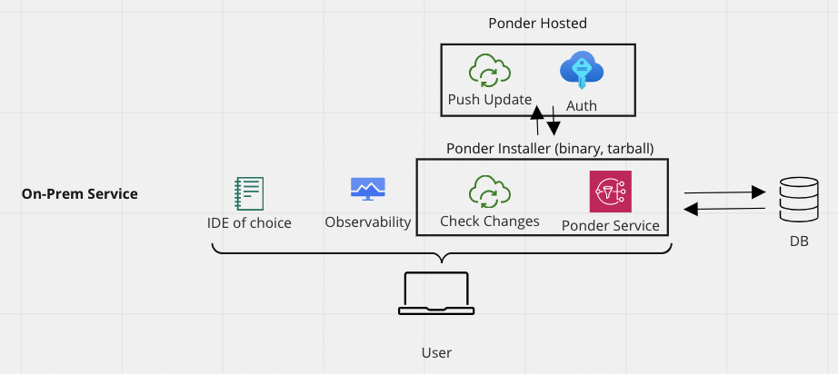

Introduction to Ponder!¶
Ponder is a highly scalable Dataframe-as-a-Service that builds on top of Modin, the popular open source technology for running distributed pandas.
With Ponder, data teams no longer have to pull their data out of the warehouse to work with it in pandas. Ponder’s breakthrough Database Pushdown capability allows users to run pandas directly in the warehouse, meaning that we inherit all the scalability and security benefits of the database, while still preserving the ease-of-use and flexibility of pandas.
With Ponder, your data teams will be able to unleash the power of pandas with:
Scale: Effortlessly transition workflows from prototype to production
Speed: Improve productivity + accelerate developer velocity
Security: Run securely on any infrastructure or inside of your warehouse
Reliability: Monitor dataframe health like any other mission critical system
{kind=link}
Offered Services¶
Your team can leverage Ponder’s technology in two ways:
Ponder on Cloud: Ponder hosts your dataframes end to end. User interacts directly with our managed Ponder Studio to get access to DB pushdown capabilities.
{kind=link}
Ponder Enterprise: Ponder deploys in your VPC and gives you the flexibility of executing your pandas code using Compute Engine, Dataproc, Big Query, and more.
{kind=link}